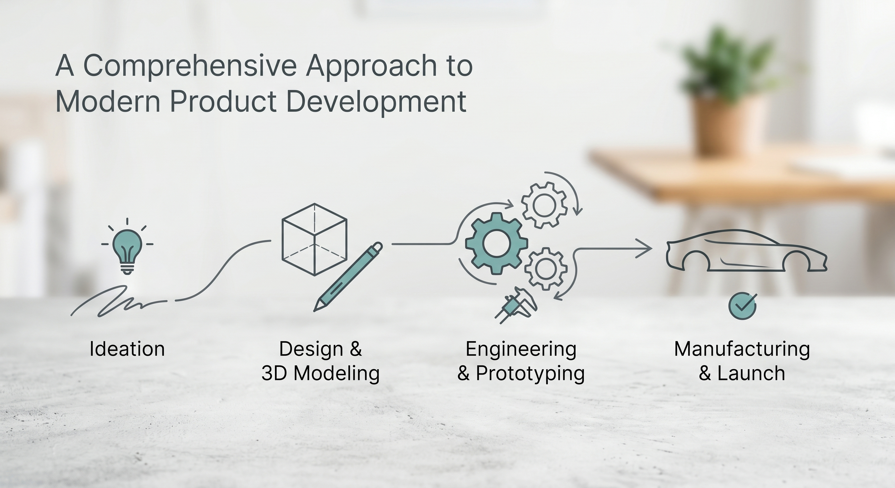

A Comprehensive Approach to Modern Product Development

Our approach to modern product development is rooted in a holistic methodology that treats design and engineering as a single, unified process. By leveraging over 14 years of automotive design DNA, we provide a strategic framework that aligns creative ambition with market reality and technical hardpoints from the very first sketch. This proactive integration ensures that every design decision is backed by rigorous insight, allowing us to navigate complex structural requirements without ever sacrificing the original aesthetic vision.
We translate these strategic concepts into physical reality through a high-fidelity digital workflow focused on uncompromising precision. Utilizing advanced tools for Class-A surfacing, parametric design, and mechanical validation, we deliver production-ready data that minimizes development cycles and eliminates costly downstream revisions. From initial ideation to final manufacturing support, our comprehensive process guarantees a seamless transition from the digital screen to the factory floor, ensuring the final product reflects the highest standards of elegance and engineering integrity.